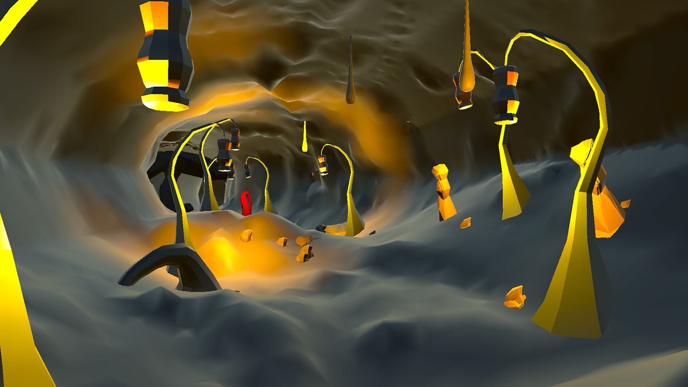

01 / ÖNE ÇIKAN PROJE Çıkış tarihi duyurulacak

GGJ 2026’DA TEMELİNİ ATTIĞIM OYUNUMMAZE
PC / STEAM
MAZE
OF MASK
Maze of Mask, iki oyuncunun su altındaki labirentleri birlikte keşfettiği bir bulmaca oyunu. Oyuncular doğru maskeyi doğru zamanda kullanarak ve birbirleriyle iletişim kurarak hazineye ulaşmaya çalışıyor.
STEAM'DE İNCELEBU PROJEDE BEN
Full-stack
geliştirici.
Maze of Mask, temelini Global Game Jam 2026’da attığım kendi projem. Bugün Barlas Studio ekibiyle geliştirmeye devam ediyor, yazılım tarafını full-stack geliştirici olarak üstleniyorum.
- ROLÜM
- Full-stack geliştirici
- ÇALIŞMA BİÇİMİ
- GGJ 2026’da başlattım · Ekiple geliştiriyorum
- PLATFORM / MOTOR
- PC · Unity